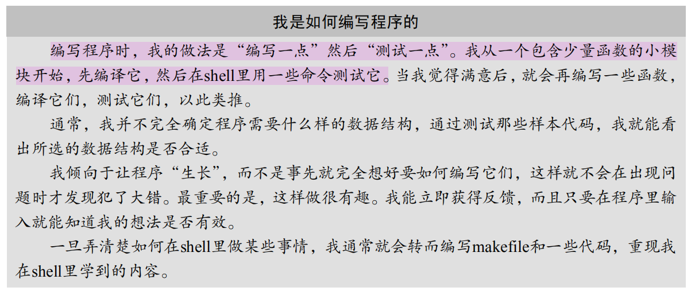

Erlang程序设计
Table of Contents
1 Erlang基本概念
1.1 使用erl
$是操作系统提示符。- 请注意每一条表达式都必须以一个句号后接一个空白字符结尾
- 空白字符是指空格、制表（Tab）或者回车符。
1.1.1 如何停止eshell
要立即停止系统，应执行表达式 erlang:halt() 。也可以立即输入函数 halt().
使用 Ctrl C 选择 abort . 停止系统最简单的方式是按Ctrl+C（Windows里是
Ctrl+Break） 后接a（“abort”的简写）
输入a会立即停止系统，这可能导致某些数据的损坏。要实现受控关闭，可以输入 q()
(q()是 init:stop() 命令在shell里的别名。).
1.1.2 关于目录的命令
-
pwd()打印当前工作目录。 -
ls()列出当前工作目录里所有的文件名。 -
cd(Dir)修改当前工作目录至Dir。
1.1.3 erl里面的快捷键
| 命令 | 说明 |
| ^A | 行首 |
| ^D | 删除当前字符 |
| ^E | 行尾 |
| ^F或右箭头键 | 向前的字符 |
| ^B或左箭头键 | 向后的字符 |
| ^P或上箭头键 | 前一行 |
| ^N或下箭头键 | 下一行 |
| ^T | 调换最近两个字符的位置 |
| Tab | 尝试扩展当前模块或函数的名称 |
1.2 模式匹配
1.2.1 = 运算符
= 不是一个赋值操作符，它实际上是一个模式匹配操作符。
绑定变量的意思是给变量一个值，一旦这个值被绑定，以后就不能改动了。在命令式语言里， 变量其实是伪装起来的内存地址。
当一个变量与另一个值进行模式匹配时，若变量一开始是没有值的话，那么变量将与右边的 值绑定。否则就会与右边的值进行模式匹配。
1.2.2 模式匹配的一些例子
1.3 变量与原子
Erlang的变量以大写字母开头。以小写字母开头的名称（比如monday或friday）不是变量， 而是符号常量，它们被称为原子（atom）。
1.3.1 一次性赋值就像是代数
1.3.2 没有副作用意味着并行变得简单
1.3.3 原子的语法
原子被用于表示常量值。在C程序里，这些常量的值无关紧要，而在这里它们之所以值得注 意仅仅是因为其各不相同，可以用来比较是否相等。
在Erlang里，原子是全局性的，而且不需要宏定义或包含文件就能实现。
- 原子以小写字母开头，后接一串字母、数字、下划线（_）或at（@）符号
- 原子还可以放在单引号（’）内。可以用这种引号形式创建以大写字母开头,例如
'Monday'、'Tuesday'、'+'、'*'和'an atom with spaces'。
1.3.4 原子返回的值
一个原子的值就是它本身。
1.3.5 如何让shell忘记所有的变量绑定？
f() 命令让shell忘记现有的任何绑定。在这个命令之后，所有变量都会变成未绑定状态
1.4 Erlang的注释
Erlang的注释由 % 开始,一直到行尾。
1.5 附注
在erlang中，存在一种叫做附注的语句，不能在shell里输入附注，附注是以连字符开头的
事物(例如 -module 和 -export ) 。
1.5.1 -import()
-import(lists, [map/2, sum/1]).
-import(lists, [map/2, sum/1]). 声明的意思是map/2函数是从lists模块里导入的。
1.5.2 -module()
-module(mylists).
设置本模块为mylists,模块名与文件名同名。
1.5.3 -export()
-export([total/1, sum/1]).
从本模块导出函数 total/1 和函数 sum/1 。
1.6 进程，模块和编译
Erlang程序是由许多并行的进程构成的。进程负责执行模块里定义的函数。模块则是扩展名
为 .erl 的文件，运行前必须先编译它们。编译某个模块之后，就可以在shell或者直接
从操作系统环境的命令行里执行该模块中的函数了。
1.6.1 在Eshell内编译文件
创建hello.erl文件， 文件名与模块名相同 。
打开eshell进行编译执行。
c(hello) 命令编译了hello.erl文件里的代码。 {ok, hello} 的意思是编译成功。现
在代码已准备好运行了。第2行里执行了 hello:start() 函数。第3行里停止了Erlang
shell。
1.6.2 在Eshell外编译文件
erlc从命令行启动了Erlang编译器。编译器编译了hello.erl里的代码并生成一个名为 hello.beam的目标代码文件。
$erl -noshell ... 命令加载了hello模块并执行 hello:start() 函数。随后，它执行
了 init:stop() ，这个表达式终止了Erlang会话。
在Erlang shell之外运行Erlang编译器（erlc）是编译Erlang代码的首选方式。可以在
Erlang shell里编译模块，但要这么做必须首先启动Erlang shell。使用erlc的优点在于自
动化。我们可以在 rakefile 或 makefile 内运行erlc来自动化构建过程。
1.7 递归
1.7.1 对函数的自身调用最终会消耗存储空间吗？
不用担心最后的自身调用，这不会耗尽栈空间。Erlang对代码采用了一种所谓“尾部调用”的 优化，意思是此函数的运行空间是固定的。这是用Erlang编写循环的标准方式，只要在最后 调用自身即可。
1.7.2 Erlang如何编写无限循环？
无限的调用自身就是编写无限循环的方式之一.
1.8 并发
1.8.1 进程 —— 并发的基本单元
Erlang的基本并发单元是进程（process）。一个进程是一个轻量级的虚拟机，只能通过发 送和接收消息来与其他进程通信。如果你想让一个进程做点什么，就要给它发送一个消息， 还可能需要等待答复。
1.8.2 [Code] 文件服务器进程
%% ---
%% Excerpted from "Programming Erlang, Second Edition",
%% published by The Pragmatic Bookshelf.
%% Copyrights apply to this code. It may not be used to create training material,
%% courses, books, articles, and the like. Contact us if you are in doubt.
%% We make no guarantees that this code is fit for any purpose.
%% Visit http://www.pragmaticprogrammer.com/titles/jaerlang2 for more book information.
%%---
-module(afile_server).
-export([start/1, loop/1]).
start(Dir) -> spawn(afile_server, loop, [Dir]).
loop(Dir) ->
receive
{Client, list_dir} ->
Client ! {self(), file:list_dir(Dir)};
{Client, {get_file, File}} ->
Full = filename:join(Dir, File),
Client ! {self(), file:read_file(Full)}
end,
loop(Dir).
1.9 如何编写Erlang程序

2 Erlang数据结构
2.1 基本数据类型
2.1.1 整数
2.1.1.1 整数运算时需要考虑其溢出问题吗？
在Erlang里，整数运算是精确的，因此无需担心运算溢出或无法用特定字长（word size） 来表示某个整数.
2.1.1.2 整数的其他进制表示
- 二进制
2#1001-> 9- 十六进制
16#af12-> 44818- 八进制
8#123-> 83
当然，其他进制如此类推。 最大的进制为36,最小为2
2.2 元组
如果想把一些数量固定的项目归组成单一的实体，就会使用元组（tuple）。创建元组的方 法是用大括号把想要表示的值括起来，并用逗号分隔它们。
2.2.1 如何使得匿名的元组的含义更加清晰？
为了更容易记住元组的用途，一种常用的做法是将原子作为元组的第一个元素，用它来表示 元组是什么。
2.2.2 嵌套的元组
{person, {name, joe}, {footsize, 42}, {height, 123}, {weight, 55}}.
2.2.2.1 使用变量进行元组嵌套
F = {firstName, joe},
L = {lastName, armstrong},
P = {F, L}.
如果试图用未定义的变量创建数据结构，就会得到一个错误
2.2.3 使用模式匹配提取元组的值
Point = {point, 25, 24},
{point, X, Y} = Point.
2.2.3.1 使用相同的变量提取元组值的条件
Point = {point, 10, 45},
{point, C, C} = Point. %% Error
Point1 = {point, 25, 25},
{point, C, C} = Point1.
模式 {point, C, C} 与 {point, 10, 45} 不匹配，因为C不能同时是10和45
2.2.3.2 对不感兴趣的值应该如何处理？
Person = {person, {name, joe}, {footsize, 42}},
{_, {_, Who}, _} = Person.
我们在这个例子中将 _ 作为占位符，用于表示不感兴趣的那些变量。
2.3 列表
列表（list）被用来存放任意数量的事物。创建列表的方法是用中括号把列表元素括起来， 并用逗号分隔它们。
2.3.1 列表内部允许同时存在哪些类型？
列表里的各元素可以是任何类型.
2.3.2 列表头和列表尾
列表的第一个元素被称为列表头（head）。假设把列表头去掉，剩下的就被称为列表尾（tail）.
如果T是一个列表，那么[H|T]也是一个列表，它的头是H，尾是T。竖线（|）把列表的头与 尾分隔开。[]是一个空列表。
2.3.3 增加列表元素
无论何时，只要用 [...|T] 语法构建一个列表，就应该确保T是列表。如果它是，那么新列表
就是“格式正确的”。如果T不是列表，那么新列表就被称为“不正确的列表”。
2.3.4 提取列表元素
可以用模式匹配操作来提取某个列表里的元素。如果有一个非空列表L，那么表达式 [X|Y]
=L （X和Y都是未绑定变量）会提取列表头作为X，列表尾作为Y。
[H1, H2 | T] = [1, 2, 3, 4].
2.3.5 列表推导
列表推导最常规的形式是下面这种表达式：
[X || Qualifier1, Qualifier2, ...]
X是任意一条表达式，后面的限定符（ Qualifier ）可以是生成器、位串生成器或过滤器。
- 生成器（generator）的写法是
Pattern <- ListExpr，其中的ListExp必须是一个 能够得出列表的表达式。 - 位串（bitstring）生成器的写法是
BitStringPattern <= BitStringExpr，其中的 BitStringExpr必须是一个能够得出位串的表达式。更多有关位串模式和生成器的信息请 参阅Erlang参考手册①。 - 过滤器（filter）既可以是判断函数（即返回true或false的函数），也可以是布尔表 达式。
2.3.5.1 具有约束(过滤器)的列表推导
[X || X <- [1, 2, 3, 4, 5], X rem 2 =:= 0].
2.3.5.2 使用多个生成器
[X+Y || X <- [1,2], Y <- [3,4]].
2.3.5.3 位串
2.3.6 [Code] 快速排序(Quicksort)
qsort([]) -> []; qsort([Pivot|T]) -> qsort([X || X <- T, X < Pivot]) ++ [Pivot] ++ qsort([X || X <- T, X >= Pivot]).
注意这里的++是中缀插入操作符。展示这段代码是为了表现它的优雅，而不是效率。这样使用++一般不认为是良好的编程实践做法。
2.3.7 [Code] 毕达哥拉斯三元数组
pythag(N) ->
[ {A,B,C} ||
A <- lists:seq(1,N),
B <- lists:seq(1,N),
C <- lists:seq(1,N),
A+B+C =< N,
A*A+B*B =:= C*C
].
2.3.8 [Code] 回文构词
perms([]) -> [[]]; perms(L) -> [[H|T] || H <- L, T <- perms(L--[H])].
perms十分简洁。它的工作方式如下：假设想要计算字符串“cats”的所有排列形式。首先，
分离字符串的第一个字符，也就是c，并计算字符串移除c后的所有排列形式。“cats”移除c
后是字符串“ats”，而“ats”的全部排列形式是以下字符串： ["ats", "ast", "tas",
"tsa", "sat", "sta"] 。接下来，把c附加到所有这些字符串的开头，形成 ["cats",
"cast", "ctas", "ctsa", "csat", "csta"] 。然后继续分离第二个字符并重复这一算法，
以此类推。
2.4 字符串
要在Erlang里表示字符串，可以选择一个由整数组成的列表或者一个二进制型.
2.4.1 字符串使用哪种编码方式呈现？
当字符串表示为一个整数列表时，列表里的每个元素都代表了一个Unicode代码点 （codepoint）。
2.4.2 字符串字面量
字符串字面量（string literal）其实就是用双引号（“）围起来的一串字符.
2.4.3 查看字符对应的整数
不需要知道代表某个字符的是哪一个整数，可以把“美元符号语法”用于这个目的.
2.4.4 使用数字代码表示一个字符
它里面的各个整数都代表Unicode字符。必须使用特殊的语法才能输入某些字符
\x{221e} 这种记法的作用是输入一个代表Unicode无穷大字符的十六进制整数
2.4.5 将数字列表打印为字符串
如果shell将某个整数列表打印成字符串，而你其实想让它打印成一列整数，那就必须使用 格式化的写语句.
2.4.6 将数字列表打印为数字
3 Erlang运算符
3.1 算术运算符
3.1.1 rem
3.1.2 div
3.1.3 /
3.2 逻辑运算符
3.2.1 =:=
4 Erlang表达式
4.1 函数
4.1.1 函数的导出声明
4.1.2 函数的子句声明顺序
-module(shop1).
-export([total/1]).
total([{What, N}|T]) -> shop:cost(What) * N + total(T);
total([]) -> 0.
这两个子句的顺序并不重要。因为子句1匹配一个非空列表，而子句2匹配空列表， 这两种情况是互斥的
4.1.3 函数的分隔符号
- 逗号（
,）分隔函数调用、数据构造和模式中的参数。 - 分号（
;）分隔子句。我们能在很多地方看到子句，例如函数定义，以及case、 if、 try..catch和receive表达式。 - 句号（
.）（后接空白）分隔函数整体，以及shell里的表达式。
4.1.4 什么是高阶函数？
4.1.5 定义匿名函数
4.1.5.1 具有多个子句的匿名函数
4.1.5.2 返回匿名函数
4.1.5.3 在自己的函数中使用传递的函数参数
-module(mylists). -compile(export_all). %% Some definitions copied from lists.erl %% for pedagogic purposes map(_, []) -> []; %% (1) map(F, [H|T]) -> [F(H)|map(F, T)]. %% (2)
4.1.6 定义自己的控制抽象
-module(lib_misc).
%% commonly used routines
-export([consult/1,
dump/2,
first/1,
for/3,
is_prefix/2,
deliberate_error/1,
deliberate_error1/1,
duplicates/1,
downcase_char/1,
downcase_str/1,
extract_attribute/2,
eval_file/1,
every/3,
file_size_and_type/1,
flush_buffer/0,
foreachWordInFile/2,
foreachWordInString/2,
keep_alive/2,
glurk/2,
lookup/2,
odds_and_evens1/1,
odds_and_evens2/1,
on_exit/2,
make_global/2,
make_test_strings/1,
merge_kv/1,
ndots/1,
test_function_over_substrings/2,
partition/2,
pmap/2,
pmap1/2,
priority_receive/0,
pythag/1,
replace/3,
split/2,
safe/1,
too_hot/0,
ls/1,
mini_shell/0,
odd/1,
outOfDate/2,
exists/1,
perms/1,
qsort/1,
random_seed/0,
read_file_as_lines/1,
remove_duplicates/1,
remove_prefix/2,
remove_leading_whitespace/1,
remove_trailing_whitespace/1,
rpc/2,
spawn_monitor/3,
sum/1,
sqrt/1,
string2term/1,
string2value/1,
term2string/1,
term2file/2,
file2term/1,
longest_common_prefix/1,
unconsult/2]).
-export([complete/2,
skip_blanks/1, trim_blanks/1, sleep/1, split_at_char/2,
%% mk_tree/1,
is_blank_line/1,
have_common_prefix/1]).
-import(lists, [all/2, any/2, filter/2, reverse/1, reverse/2,
foreach/2, map/2, member/2, sort/1]).
-define(NYI(X),(begin
io:format("*** NYI ~p ~p ~p~n",[?MODULE, ?LINE, X]),
exit(nyi)
end)).
glurk(X, Y) ->
?NYI({glurk, X, Y}).
-include_lib("kernel/include/file.hrl").
file_size_and_type(File) ->
case file:read_file_info(File) of
{ok, Facts} ->
{Facts#file_info.type, Facts#file_info.size};
_ ->
error
end.
ls(Dir) ->
{ok, L} = file:list_dir(Dir),
lists:map(fun(I) -> {I, file_size_and_type(I)} end, lists:sort(L)).
consult(File) ->
case file:open(File, read) of
{ok, S} ->
Val = consult1(S),
file:close(S),
{ok, Val};
{error, Why} ->
{error, Why}
end.
consult1(S) ->
case io:read(S, '') of
{ok, Term} -> [Term|consult1(S)];
eof -> [];
Error -> Error
end.
dump(File, Term) ->
Out = File ++ ".tmp",
io:format("** dumping to ~s~n",[Out]),
{ok, S} = file:open(Out, [write]),
io:format(S, "~p.~n",[Term]),
file:close(S).
partition(F, L) -> partition(F, L, [], []).
partition(F, [H|T], Yes, No) ->
case F(H) of
true -> partition(F, T, [H|Yes], No);
false -> partition(F, T, Yes, [H|No])
end;
partition(_, [], Yes, No) ->
{Yes, No}.
remove_duplicates(L) ->
remove_duplicates(lists:sort(L), []).
remove_duplicates([H|X=[H|_]], L) -> remove_duplicates(X, L);
remove_duplicates([H|T], L) -> remove_duplicates(T, [H|L]);
remove_duplicates([], L) -> L.
%% is_prefix(A, B) -> bool()
%% true if A is a prefix of B
is_prefix([], _) -> true;
is_prefix([H|T], [H|T1]) -> is_prefix(T, T1);
is_prefix(_, _) -> false.
first([_]) -> [];
first([H|T]) -> [H|first(T)].
sleep(T) ->
receive
after T ->
true
end.
flush_buffer() ->
receive
_Any ->
flush_buffer()
after 0 ->
true
end.
priority_receive() ->
receive
{alarm, X} ->
{alarm, X}
after 0 ->
receive
Any ->
Any
end
end.
duplicates(X) -> find_duplicates(sort(X), []).
find_duplicates([H,H|T], [H|_]=L) ->
find_duplicates(T, L);
find_duplicates([H,H|T], L) ->
find_duplicates(T, [H|L]);
find_duplicates([_|T], L) ->
find_duplicates(T, L);
find_duplicates([], L) ->
L.
%% complete(A, L) -> {yes, S}
%% error - means no string will ever match
%% {more,L} - means there are completions but I need more characters
%% L = [Str] = list of possible completions
%% {yes, S} - means there is a unique completion
%%
%% A = S = str(), L=[str()]
%% used to compute the smallest S
%% such that A ++ S is a member of all elements of L
complete(Str, L) ->
case filter(fun(I) -> is_prefix(Str, I) end, L) of
[] ->
error;
[L1] ->
J = remove_prefix(Str, L1),
{yes, J};
L1 ->
%% L1 is not empty so it's either more or a string
%% We know that Str is a prefix of all elements in L1
L2 = map(fun(I) -> remove_prefix(Str, I) end, L1),
%% L2 will also not be empty
%% io:format("L1=~p L2=~p~n",[L1,L2]),
case longest_common_prefix(L2) of
[] ->
{more, L1};
S ->
{yes, S}
end
end.
%% remove_prefix(X, Y) -> Z
%% finds Z such that X ++ Z = Y
%%
remove_prefix([H|T], [H|T1]) -> remove_prefix(T, T1);
remove_prefix([], L) -> L.
%% longest_common_prefix([str()]) -> str()
longest_common_prefix(L) ->
longest_common_prefix(L, []).
longest_common_prefix(Ls, L) ->
case have_common_prefix(Ls) of
{yes, H, Ls1} ->
longest_common_prefix(Ls1, [H|L]);
no ->
reverse(L)
end.
have_common_prefix([]) -> no;
have_common_prefix(L) ->
case any(fun is_empty_list/1, L) of
true -> no;
false ->
%% All lists have heads and tails
Heads = map(fun(I) -> hd(I) end, L),
H = hd(Heads),
case all(fun(X) -> hd(X) =:= H end, L) of
true ->
Tails = map(fun(I) -> tl(I) end, L),
{yes, H, Tails};
false ->
no
end
end.
is_empty_list([]) -> true;
is_empty_list(X) when is_list(X) -> false.
skip_blanks([$\s|T]) -> skip_blanks(T);
skip_blanks(X) -> X.
trim_blanks(X) -> reverse(skip_blanks(reverse(X))).
split_at_char(Str, C) -> split_at_char(Str, C, []).
split_at_char([C|T], C, L) -> {yes, reverse(L), T};
split_at_char([H|T], C, L) -> split_at_char(T, C, [H|L]);
split_at_char([], _, _) -> no.
%% read file into line buffer
read_file_as_lines(File) ->
case file:read_file(File) of
{ok, Bin} ->
{ok, split_into_lines(binary_to_list(Bin), 1, [])};
{error, _} ->
{error, eNoFile}
end.
split_into_lines([], _, L) ->
reverse(L);
split_into_lines(Str, Ln, L) ->
{Line, Rest} = get_line(Str, []),
split_into_lines(Rest, Ln+1, [{Ln,Line}|L]).
get_line([$\n|T], L) -> {reverse(L), T};
get_line([H|T], L) -> get_line(T, [H|L]);
get_line([], L) -> {reverse(L), []}.
is_blank_line([$\s|T]) -> is_blank_line(T);
is_blank_line([$\n|T]) -> is_blank_line(T);
is_blank_line([$\r|T]) -> is_blank_line(T);
is_blank_line([$\t|T]) -> is_blank_line(T);
is_blank_line([]) -> true;
is_blank_line(_) -> false.
%%----------------------------------------------------------------------
%% lookup
%%----------------------------------------------------------------------
%% split(Pred, L) -> {True, False}
split(F, L) -> split(F, L, [], []).
split(F, [H|T], True, False) ->
case F(H) of
true -> split(F, T, [H|True], False);
false -> split(F, T, True, [H|False])
end;
split(_, [], True, False) ->
{reverse(True), reverse(False)}.
%%----------------------------------------------------------------------
outOfDate(In, Out) ->
case exists(Out) of
true ->
case {last_modified(In), last_modified(Out)} of
{T1, T2} when T1 > T2 ->
true;
_ ->
false
end;
false ->
true
end.
last_modified(File) ->
case file:read_file_info(File) of
{ok, Info} ->
Info#file_info.mtime;
_ ->
0
end.
exists(File) ->
case file:read_file_info(File) of
{ok, _} ->
true;
_ ->
false
end.
%%----------------------------------------------------------------------
%% replace(Key,Val, [{Key,Val}]) -> [{Key,Val}]
%% replace and Key with Key,Val in the association list Old
replace(Key, Val, Old) ->
replace(Key, Val, Old, []).
replace(Key, Val1, [{Key,_Val}|T], L) ->
reverse(L, [{Key, Val1}|T]);
replace(Key, Val, [H|T], L) ->
replace(Key, Val, T, [H|L]);
replace(Key, Val, [], L) ->
[{Key,Val}|L].
%%----------------------------------------------------------------------
%% make_test_strings(Str)
%%
make_test_strings(Str) ->
L = length(Str),
make_test_strings(Str, L+1, 1).
make_test_strings(_, Max, Max) -> [];
make_test_strings(Str, Max, N) ->
[string:sub_string(Str, 1, N)|make_test_strings(Str, Max, N+1)].
test_function_over_substrings(F, Str) ->
L = make_test_strings(Str),
foreach(fun(S) ->
io:format("|~s|~n => ~p~n", [S, F(S)])
end, L).
%%----------------------------------------------------------------------
%% merge_kv(Kv) -> Kv'
%% Take a association list of {Key, Val} where Key can occure
%% More than once and make it into a list {Key, [Val]} where
%% each Key occurs only once
merge_kv(KV) -> merge_kv(KV, dict:new()).
merge_kv([{Key,Val}|T], D0) ->
case dict:find(Key, D0) of
{ok, L} -> merge_kv(T, dict:store(Key, [Val|L], D0));
error -> merge_kv(T, dict:store(Key, [Val], D0))
end;
merge_kv([], D) ->
dict:to_list(D).
%% rpc/2
%%
rpc(Pid, Q) ->
Pid ! {self(), Q},
receive
{Pid, Reply} ->
Reply
end.
%% odd(X)
%%
odd(X) ->
case X band 1 of
1 -> true;
0 -> false
end.
ndots([$.|T]) -> 1 + ndots(T);
ndots([_|T]) -> ndots(T);
ndots([]) -> 0.
term2file(File, Term) ->
file:write_file(File, term_to_binary(Term)).
file2term(File) ->
{ok, Bin} = file:read_file(File),
binary_to_term(Bin).
string2term(Str) ->
{ok,Tokens,_} = erl_scan:string(Str ++ "."),
{ok,Term} = erl_parse:parse_term(Tokens),
Term.
term2string(Term) ->
lists:flatten(io_lib:format("~p",[Term])).
downcase_str(Str) -> map(fun downcase_char/1, Str).
downcase_char(X) when $A =< X, X =< $Z -> X+ $a - $A;
downcase_char(X) -> X.
string2value(Str) ->
{ok, Tokens, _} = erl_scan:string(Str ++ "."),
{ok, Exprs} = erl_parse:parse_exprs(Tokens),
Bindings = erl_eval:new_bindings(),
{value, Value, _} = erl_eval:exprs(Exprs, Bindings),
Value.
mini_shell() ->
mini_shell(erl_eval:new_bindings()).
mini_shell(Bindings0) ->
case io:get_line('>>> ') of
"q\n" -> void;
Str ->
{Value, Bindings1} = string2value(Str, Bindings0),
io:format("~p~n",[Value]),
mini_shell(Bindings1)
end.
string2value(Str, Bindings0) ->
{ok, Tokens, _} = erl_scan:string(Str ++ "."),
{ok, Exprs} = erl_parse:parse_exprs(Tokens),
{value, Value, Bindings1} = erl_eval:exprs(Exprs, Bindings0),
{Value, Bindings1}.
eval_file(File) ->
{ok, S} = file:open(File, [read]),
Vals = eval_file(S, 1, erl_eval:new_bindings()),
file:close(S),
Vals.
eval_file(S, Line, B0) ->
case io:parse_erl_exprs(S, '', Line) of
{ok, Form, Line1} ->
{value, Value, B1} = erl_eval:exprs(Form, B0),
[Value|eval_file(S, Line1, B1)];
{eof, _} ->
[]
end.
remove_leading_whitespace([$\n|T]) -> remove_leading_whitespace(T);
remove_leading_whitespace([$\s|T]) -> remove_leading_whitespace(T);
remove_leading_whitespace([$\t|T]) -> remove_leading_whitespace(T);
remove_leading_whitespace(X) -> X.
remove_trailing_whitespace(X) ->
reverse(remove_leading_whitespace(reverse(X))).
safe(Fun) ->
case (catch Fun()) of
{'EXIT', Why} ->
{error, Why};
Other ->
Other
end.
too_hot() ->
event_handler:event(errors, too_hot).
%% spawn_monitor behaves just like spawn
spawn_monitor(_, false, Fun) ->
spawn(Fun);
spawn_monitor(Term, true, Fun) ->
spawn(fun() -> starter(Term, Fun) end).
starter(Term, Fun) ->
S = self(),
io:format("process:~p started at:~p ~p~n",
[self(), erlang:now(), Term]),
Monitor = spawn_link(fun() -> amonitor(Term, S) end),
receive
{Monitor, ready} ->
Fun()
end.
amonitor(Term, Parent) ->
process_flag(trap_exit, true),
Parent ! {self(), ready},
receive
{'EXIT', Parent, Why} ->
io:format("process:~p dies at:~p ~p reason:~p~n",
[self(), erlang:now(), Term, Why])
end.
keep_alive(Name, Fun) ->
register(Name, Pid = spawn(Fun)),
on_exit(Pid, fun(_Why) -> keep_alive(Name, Fun) end).
%% make_global(Name, Fun) checks if there is a global process with the
%% registered name Name. If there is no process it spawns a process to
%% evaluate Fun() and registers it with the name Name.
make_global(Name, Fun) ->
S = self(),
Pid = spawn(fun() -> make_global(S, Name, Fun) end),
receive
{Pid, Reply} ->
Reply
end.
make_global(Parent, Name, Fun) ->
case (catch register(Name, self())) of
true -> Fun();
_ -> true
end,
Parent ! {self(), ok}.
%% on_exit(Pid, Fun) links to Pid. If Pid dies with reason Why then
%% Fun(Why) is evaluated:
on_exit(Pid, Fun) ->
spawn(fun() ->
Ref = monitor(process, Pid), %% <label id="code.onexit2"/>
receive
{'DOWN', Ref, process, Pid, Why} -> %% <label id="code.onexit3"/>
Fun(Why) %% <label id="code.onexit4"/>
end
end).
%% every(Pid, Time, Fun) links to Pid then every Time Fun() is
%% evaluated. If Pid exits, this process stops.
every(Pid, Time, Fun) ->
spawn(fun() ->
process_flag(trap_exit, true),
link(Pid),
every_loop(Pid, Time, Fun)
end).
every_loop(Pid, Time, Fun) ->
receive
{'EXIT', Pid, _Why} ->
true
after Time ->
Fun(),
every_loop(Pid, Time, Fun)
end.
for(Max, Max, F) -> [F(Max)];
for(I, Max, F) -> [F(I)|for(I+1, Max, F)].
qsort([]) -> [];
qsort([Pivot|T]) ->
qsort([X || X <- T, X < Pivot])
++ [Pivot] ++
qsort([X || X <- T, X >= Pivot]).
perms([]) -> [[]];
perms(L) -> [[H|T] || H <- L, T <- perms(L--[H])].
pythag(N) ->
[ {A,B,C} ||
A <- lists:seq(1,N),
B <- lists:seq(1,N),
C <- lists:seq(1,N),
A+B+C =< N,
A*A+B*B =:= C*C
].
extract_attribute(File, Key) ->
case beam_lib:chunks(File,[attributes]) of
{ok, {attrs, [{attributes,L}]}} ->
lookup(Key, L);
_ -> exit(badFile)
end.
lookup(Key, [{Key,Val}|_]) -> {ok, Val};
lookup(Key, [_|T]) -> lookup(Key, T);
lookup(_, []) -> error.
unconsult(File, L) ->
{ok, S} = file:open(File, write),
lists:foreach(fun(X) -> io:format(S, "~p.~n",[X]) end, L),
file:close(S).
random_seed() ->
{_,_,X} = erlang:now(),
{H,M,S} = time(),
H1 = H * X rem 32767,
M1 = M * X rem 32767,
S1 = S * X rem 32767,
put(random_seed, {H1,M1,S1}).
odds_and_evens1(L) ->
Odds = [X || X <- L, (X rem 2) =:= 1],
Evens = [X || X <- L, (X rem 2) =:= 0],
{Odds, Evens}.
odds_and_evens2(L) ->
odds_and_evens_acc(L, [], []).
odds_and_evens_acc([H|T], Odds, Evens) ->
case (H rem 2) of
1 -> odds_and_evens_acc(T, [H|Odds], Evens);
0 -> odds_and_evens_acc(T, Odds, [H|Evens])
end;
odds_and_evens_acc([], Odds, Evens) ->
{Odds, Evens}.
sum(L) -> sum(L, 0).
sum([], N) -> N;
sum([H|T], N) -> sum(T, H+N).
sqrt(X) when X < 0 ->
error({squareRootNegativeArgument, X});
sqrt(X) ->
math:sqrt(X).
pmap(F, L) ->
S = self(),
%% make_ref() returns a unique reference
%% we'll match on this later
Ref = erlang:make_ref(),
Pids = map(fun(I) ->
spawn(fun() -> do_f(S, Ref, F, I) end)
end, L),
%% gather the results
gather(Pids, Ref).
do_f(Parent, Ref, F, I) ->
Parent ! {self(), Ref, (catch F(I))}.
gather([Pid|T], Ref) ->
receive
{Pid, Ref, Ret} -> [Ret|gather(T, Ref)]
end;
gather([], _) ->
[].
pmap1(F, L) ->
S = self(),
Ref = erlang:make_ref(),
foreach(fun(I) ->
spawn(fun() -> do_f1(S, Ref, F, I) end)
end, L),
%% gather the results
gather1(length(L), Ref, []).
do_f1(Parent, Ref, F, I) ->
Parent ! {Ref, (catch F(I))}.
gather1(0, _, L) -> L;
gather1(N, Ref, L) ->
receive
{Ref, Ret} -> gather1(N-1, Ref, [Ret|L])
end.
%% evalute F(Word) for each word in the file File
foreachWordInFile(File, F) ->
case file:read_file(File) of
{ok, Bin} -> foreachWordInString(binary_to_list(Bin), F);
_ -> void
end.
foreachWordInString(Str, F) ->
case get_word(Str) of
no ->
void;
{Word, Str1} ->
F(Word),
foreachWordInString(Str1, F)
end.
isWordChar(X) when $A=< X, X=<$Z -> true;
isWordChar(X) when $0=< X, X=<$9 -> true;
isWordChar(X) when $a=< X, X=<$z -> true;
isWordChar(_) -> false.
get_word([H|T]) ->
case isWordChar(H) of
true -> collect_word(T, [H]);
false -> get_word(T)
end;
get_word([]) ->
no.
collect_word([H|T]=All, L) ->
case isWordChar(H) of
true -> collect_word(T, [H|L]);
false -> {reverse(L), All}
end;
collect_word([], L) ->
{reverse(L), []}.
deliberate_error(A) ->
bad_function(A, 12),
lists:reverse(A).
bad_function(A, _) ->
{ok, Bin} = file:open({abc,123}, A),
binary_to_list(Bin).
deliberate_error1(A) ->
bad_function(A, 12).
4.1.7 内置函数
内置函数简称为BIF（built-in function），是那些作为Erlang语言定义一部分的函数。有 些内置函数是用Erlang实现的，但大多数是用Erlang虚拟机里的底层操作实现的。内置函数 能提供操作系统的接口，并执行那些无法用Erlang编写或者编写后非常低效的操作。比如， 你无法将一个列表转变成元组，或者查到当前的时间和日期。
所有内置函数都表现得像是属于erlang模块，但那些最常用的内置函数（例如listto_ tuple）是自动导入的，因此可以直接调用listtotuple(…)，而无需用erlang:listto_ tuple(…)。